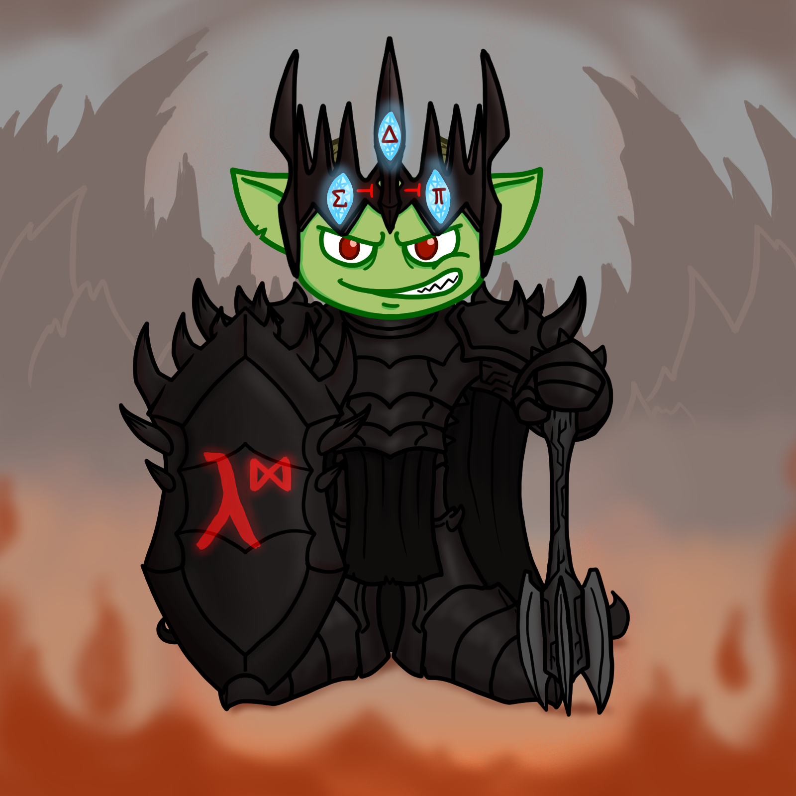
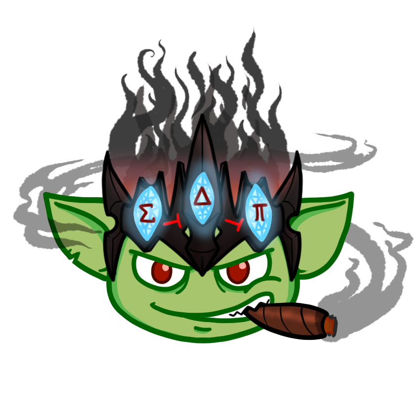
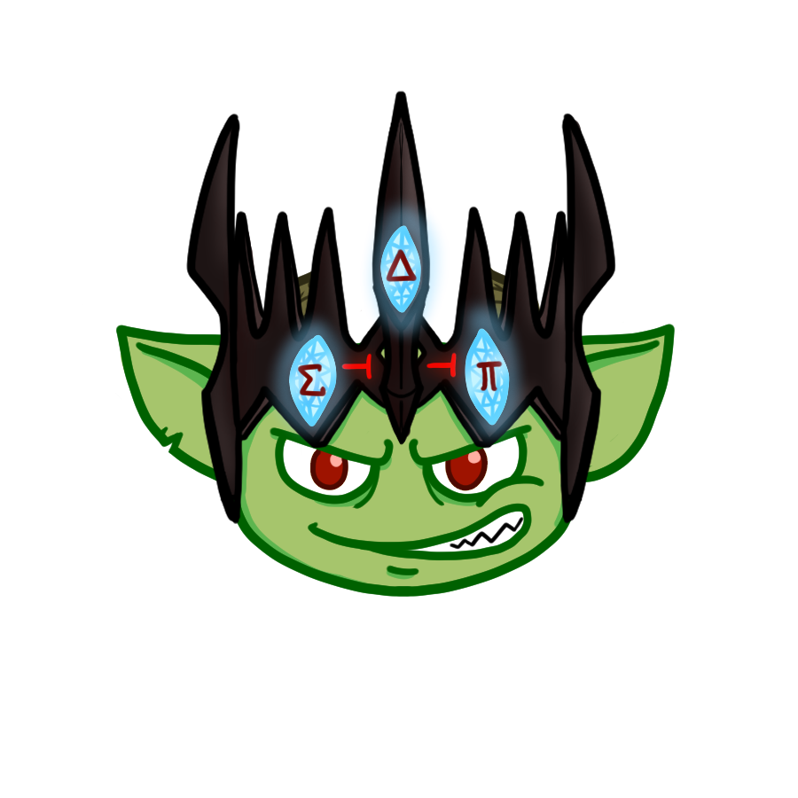
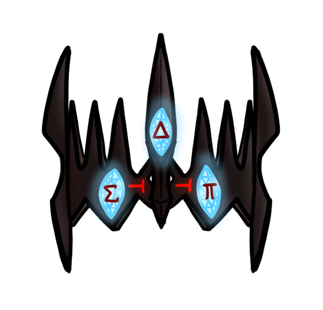

In appreciation of the many open-source contributions made by the Apache Tinkerpop/Gremlin community to the applied category theory community (thanks Microsoft! thanks Marko! thanks Ketrina! Godspeed Vinod! thanks all!);
As well as the recognition that an Apache Tinkerpop/Gremlin-like interoperability model has organically developed within the applied category theory community (with a number of systems implementing Kan extensions);
And in honor of the 50th anniversary of (Lord of the Rings author) J.R.R. Tolkien's death, we are pleased to open-source a handful of "powered by applied category theory" Gremlin Morgoth commemorative logos, which we hope will be adopted (and remixed, altered, shared, etc!) by the many mathematicians, computer scientists, functional programmers, data engineers and their well-wishers and foes of Feanor etc applying category theory every day.
As they "rejoice in light and receive it and give it back in hues more marvellous than before", the Silmarils reflect the universally generative nature of the three (sigma, delta, pi) Kan extensions (from a generative symbolic AI point of view), and hence even in the darkness of the smallest data sets (ontologies), Kan extensions "of their own radiance shine like the stars".




What's with all the LotR memes?